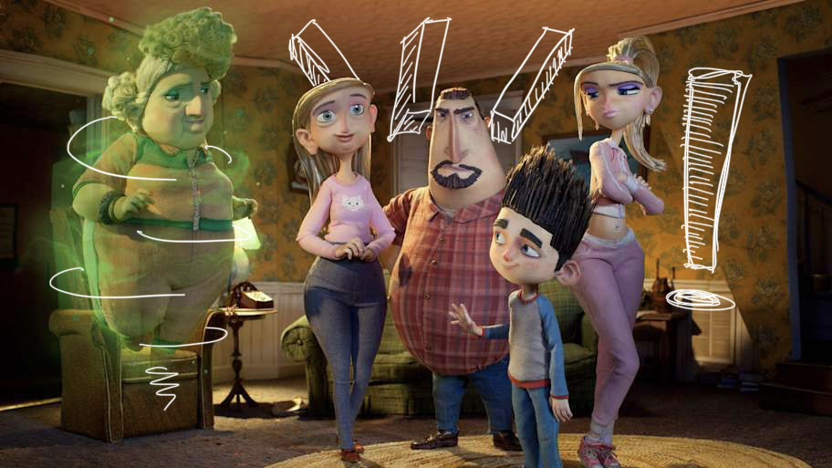
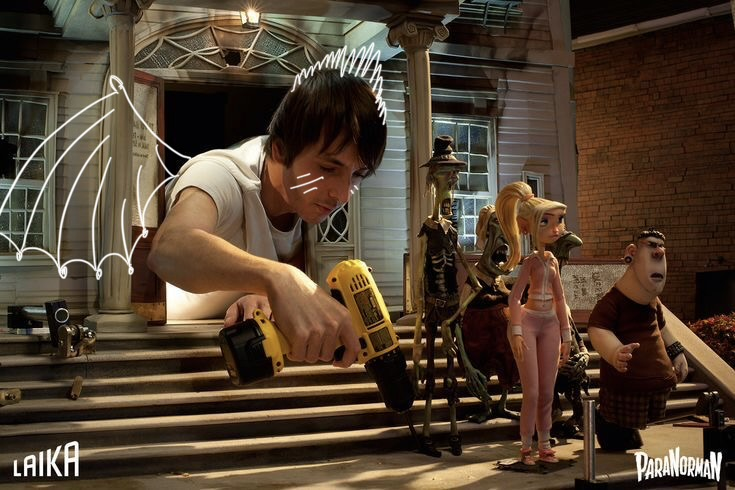
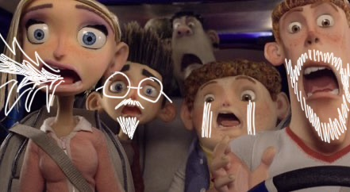
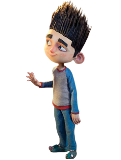

Paranorman




ParaNorman is about a boy named Norman who can see and talk to ghosts, which makes him an outcast in his town. When an old witch’s curse threatens to bring the dead back to life, Norman is the only one who can stop it. Throughout the movie, he learns to accept who he is and uses his ability to help others, even when people don’t understand him. I like this movie because at the time it was a mix of a couple of stop motion animation and the paranormal which were two things I couldn't resist. I enjoyed seeing the sort of aesthetic the characters were created as because I thoutgh it to be very cute. Many times through the movie there were many scenese that captured different moods based on the contrast and tone of colors. While it also being humorous I thought it was always a fun little movie that had a climax and resolution that was interesting for kids.
Chris Butler